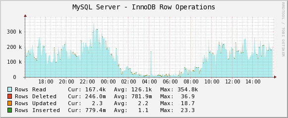

Dans une requête, si les noms de colonnes ne sont pas ambiguës, il
n’est pas nécessaire de rajouter devant un champ le nom de la
table.
Mais ce n’est pas “propre”, c’est difficile à relire, donc si il y a des
jointures au minimum préfixer le nom des champs par de simple alias pour
savoir à quelle table appartient chaque champ.
C’est la jointure par défaut celle que vous devez maîtriser parfaitement
Il existe 2 manières de réaliser (écrire) une jointure interne :
SELECT <fields>
FROM TableA
[INNER] JOIN TableB ON TableA.PrimaryKey = TableB.ForeignKey;SELECT <fields>
FROM TableA , TableB
WHERE TableA.PrimaryKey = TableB.ForeignKey;La première méthode d’écrire une jointure avec “INNER JOIN” est recommandée bien que un peu plus difficile à écrire au début, elle est plus normalisée plus rapide pour les moteurs de SGBDR. C’est cette méthode que vous devez privilégier.
Si les clés dans les tables portent le même nom, avec le mot clé NATURAL, il est possible de définir la jointure sans utiliser le mot clé “ON” (à titre d’information, éviter cette notation).
SELECT <fields>
FROM TableA
NATURAL JOIN TableB;Les Différents types de jointures :
Créer les 2 tables ci dessous :
DROP TABLE IF EXISTS EMPLOYE,DEPARTEMENT;
CREATE TABLE DEPARTEMENT (
idDept INT,
nom VARCHAR(255),
lieu VARCHAR(255),
PRIMARY KEY(idDept)
);
INSERT INTO DEPARTEMENT (idDept,nom,lieu) VALUES (10,"recherche","Besançon");
INSERT INTO DEPARTEMENT (idDept,nom,lieu) VALUES (20,"vente","Montbéliard");
INSERT INTO DEPARTEMENT (idDept,nom,lieu) VALUES (30,"direction","Belfort");
INSERT INTO DEPARTEMENT (idDept,nom,lieu) VALUES (40,"fabrication","Sochaux");
CREATE TABLE EMPLOYE (
idEmploye INT,
nom VARCHAR(255),
fonction VARCHAR(255),
idResponsable INT,
date_embauche date,
salaire NUMERIC(8,2),
prime NUMERIC(8,2),
departement_id INT,
PRIMARY KEY(idEmploye)
);
INSERT INTO EMPLOYE(nom,idEmploye,fonction,idResponsable,date_embauche,salaire,prime,departement_id) VALUES
('MARTIN',16712,'directeur',25717,'2000-05-23',8000,NULL,30);
INSERT INTO EMPLOYE(nom,idEmploye,fonction,idResponsable,date_embauche,salaire,prime,departement_id) VALUES
('DUPONT',17574,'administratif',16712,'2005-05-03',1800,NULL,30),
('DUPOND',26691,'commercial',27047,'1998-04-04',5000,500,20),
('LAMBERT',25012,'administratif',27047,'2001-03-14',NULL,2400,20),
('JOUBERT',25717,'president',NULL,'1992-08-10',10000,NULL,30),
('LEBRETON',16034,'commercial',27047,'2001-06-01',3000,0,20),
('MARTIN',17147,'commercial',27047,'2005-05-03',4000,500,20),
('PAQUEL',27546,'commercial',27047,'1993-09-03',4400,1000,20),
('LEFEBVRE',25935,'commercial',27047,'1994-01-11',4700,400,20),
('GARDARIN',15155,'ingenieur',24533,'1995-03-22',4800,NULL,10),
('SIMON',26834,'ingenieur',24533,'1998-10-04',4000,NULL,10),
('DELOBEL',16278,'ingenieur',24533,'2004-11-16',4200,NULL,10),
('ADIBA',25067,'ingenieur',24533,'1997-10-05',6000,NULL,10),
('CODD',24533,'directeur',25717,'1985-11-12',11000,NULL,10),
('LAMERE',27047,'directeur',25717,'1999-09-07',9000,NULL,20),
('BALIN',17232,'administratif',24533,'1997-10-03',2700,NULL,10),
('BARA',24831,'administratif',16712,'1998-11-10',3000,NULL,30),
('toto','00001','livreur de pizzas',NULL,NULL,NULL,NULL,NULL);EXERCICES : les différents cas vont être présentés à l’aide d’exemples
Dans les 2 requêtes, le résultat sera trié selon l’ordre lexicographique sur le nom de département puis le nom d’employé
+----------+---------------+----------------+
| nom | fonction | nomDepartement |
+----------+---------------+----------------+
| BARA | administratif | direction |
| DUPONT | administratif | direction |
| JOUBERT | president | direction |
| MARTIN | directeur | direction |
| ADIBA | ingenieur | recherche |
| BALIN | administratif | recherche |
| CODD | directeur | recherche |
| DELOBEL | ingenieur | recherche |
| GARDARIN | ingenieur | recherche |
| SIMON | ingenieur | recherche |
| DUPOND | commercial | vente |
| LAMBERT | administratif | vente |
| LAMERE | directeur | vente |
| LEBRETON | commercial | vente |
| LEFEBVRE | commercial | vente |
| MARTIN | commercial | vente |
| PAQUEL | commercial | vente |
+----------+---------------+----------------+reponse
-- R1
SELECT E.nom,E.fonction,D.nom AS nomDepartement
FROM EMPLOYE AS E
INNER JOIN DEPARTEMENT AS D ON D.idDept=E.departement_id
ORDER BY nomDepartement, E.nom ;
-- il est possible d'utiliser les ALIAS de la projection (SELECT) dans le ORDER BR
-- R2 ( ancienne notation ; moins performant)
SELECT E.nom,E.fonction,D.nom AS nomDepartement
FROM EMPLOYE AS E, DEPARTEMENT AS D
WHERE D.idDept=E.departement_id
ORDER BY nomDepartement, E.nom ;Utiliser dans la suite le mot clé JOIN pour vos jointures
réponse
SELECT E.nom,E.fonction,D.nom AS nomDepartement
FROM EMPLOYE AS E
LEFT JOIN DEPARTEMENT AS D ON D.idDept=E.departement_id
ORDER BY nomDepartement, E.nom ;
-- une ligne en plus
-- | toto | livreur de pizzas | NULL |
SELECT E.nom,E.fonction,D.nom AS nomDepartement
FROM EMPLOYE AS E
RIGHT JOIN DEPARTEMENT AS D ON D.idDept=E.departement_id
ORDER BY nomDepartement, E.nom ;
-- une ligne en plus
-- | NULL | NULL | fabrication |+----------------+----------------+
| NombreEmployes | nomDepartement |
+----------------+----------------+
| 4 | direction |
| 6 | recherche |
| 7 | vente |
+----------------+----------------+
réponse
SELECT count(E.nom) as NombreEmployes,D.nom AS nomDepartement
FROM EMPLOYE AS E
INNER JOIN DEPARTEMENT AS D ON D.idDept=E.departement_id
GROUP BY D.nom
ORDER BY D.nom;SELECT count(E.nom) as NombreEmployes,D.nom AS nomDepartement, D.lieu
FROM EMPLOYE AS E
INNER JOIN DEPARTEMENT AS D ON D.idDept=E.departement_id
GROUP BY D.nom -- , D.lieu
ORDER BY D.nom;ONLY_FULL_GROUP_BY ;
Regarder la valeur de la variable @@sql_mode ; ajouter puis
retirer le mode ONLY_FULL_GROUP_BYSELECT @@sql_mode ;
-- ajouter le mode
SET sql_mode=(SELECT CONCAT(@@sql_mode,',ONLY_FULL_GROUP_BY'));
-- supprimer le mode
SET sql_mode=(SELECT REPLACE(@@sql_mode, 'ONLY_FULL_GROUP_BY', ''));ne pas faire SET sql_mode = ''; ; conséquence => https://dev.mysql.com/doc/refman/5.7/en/sql-mode.html
+---------------+-------------+
| NombreEmploye | nom |
+---------------+-------------+
| 4 | direction |
| 0 | fabrication |
| 6 | recherche |
| 7 | vente |
+---------------+-------------+réponse
SELECT count(E.nom) as NombreEmploye,D.nom
FROM EMPLOYE AS E
RIGHT JOIN DEPARTEMENT AS D ON D.idDept=E.departement_id
GROUP BY D.nom
ORDER BY D.nom;
-- jointure à droite : compte les employés par département (EMPLOYE.departement_id IS NULL) : valeur NULL à droite de la jointure
-- jointure à gauche : compte les employés n'ayant n'ayant pas de département (DEPARTEMENT.departement_id IS NULL) : valeur NULL à gauche de la jointure
| 1 | NULL |+-------------+
| nom |
+-------------+
| fabrication |
+-------------+
+---------------+-------------+
| NombreEmploye | nom |
+---------------+-------------+
| 0 | fabrication |
+---------------+-------------+réponse
SELECT D.nom
FROM EMPLOYE AS E
RIGHT JOIN DEPARTEMENT AS D ON D.idDept=E.departement_id
WHERE E.departement_id is NULL;
SELECT count(E.nom) as NombreEmploye,D.nom
FROM EMPLOYE AS E
RIGHT JOIN DEPARTEMENT AS D ON D.idDept=E.departement_id
WHERE E.departement_id is NULL
GROUP BY D.nom;le résultat sera trié selon l’ordre lexicographique sur la fonction du responsable puis le nom du responsable puis la fonction de l’employé puis le nom de l’employé
+----------+---------------+----------------+---------------------+
| nom | fonction | nomResponsable | FonctionResponsable |
+----------+---------------+----------------+---------------------+
| BALIN | administratif | CODD | directeur |
| ADIBA | ingenieur | CODD | directeur |
| DELOBEL | ingenieur | CODD | directeur |
| GARDARIN | ingenieur | CODD | directeur |
| SIMON | ingenieur | CODD | directeur |
| LAMBERT | administratif | LAMERE | directeur |
| DUPOND | commercial | LAMERE | directeur |
| LEBRETON | commercial | LAMERE | directeur |
| LEFEBVRE | commercial | LAMERE | directeur |
| MARTIN | commercial | LAMERE | directeur |
| PAQUEL | commercial | LAMERE | directeur |
| BARA | administratif | MARTIN | directeur |
| DUPONT | administratif | MARTIN | directeur |
| CODD | directeur | JOUBERT | president |
| LAMERE | directeur | JOUBERT | president |
| MARTIN | directeur | JOUBERT | president |
+----------+---------------+----------------+---------------------+réponse
SELECT E1.nom,E1.fonction,E2.nom as nomResponsable, E2.fonction as FonctionResponsable
FROM EMPLOYE AS E1
INNER JOIN EMPLOYE AS E2 ON E1.idResponsable= E2.idEmploye
ORDER BY FonctionResponsable, nomResponsable , fonction, nom;+--------+-----------+----------------+---------------------+
| nom | fonction | nomResponsable | FonctionResponsable |
+--------+-----------+----------------+---------------------+
| MARTIN | directeur | JOUBERT | president |
| CODD | directeur | JOUBERT | president |
| LAMERE | directeur | JOUBERT | president |
+--------+-----------+----------------+---------------------+réponse
SELECT E1.nom,E1.fonction,E2.nom as nomResponsable, E2.fonction as FonctionResponsable
FROM EMPLOYE AS E1
INNER JOIN EMPLOYE AS E2 ON E1.idResponsable= E2.idEmploye
WHERE E2.idResponsable is NULL;+----------+------------+----------+
| nom | fonction | salaire |
+----------+------------+----------+
| GARDARIN | ingenieur | 4800.00 |
| DELOBEL | ingenieur | 4200.00 |
| MARTIN | directeur | 8000.00 |
| CODD | directeur | 11000.00 |
| ADIBA | ingenieur | 6000.00 |
| JOUBERT | president | 10000.00 |
| LEFEBVRE | commercial | 4700.00 |
| DUPOND | commercial | 5000.00 |
| LAMERE | directeur | 9000.00 |
| PAQUEL | commercial | 4400.00 |
+----------+------------+----------+reponse
SELECT E1.nom,E1.fonction,E1.salaire
FROM EMPLOYE AS E1
INNER JOIN EMPLOYE AS E2 ON E1.salaire>E2.salaire
WHERE E2.nom like "SIMON";
-- avec une sous interrogation (chapitre suivant)
SELECT E.nom,E.fonction,E.salaire
FROM EMPLOYE AS E
WHERE E.salaire > (SELECT salaire
FROM EMPLOYE
WHERE nom = 'SIMON');Une caractéristique puissante de SQL est la possibilité qu’un critère de recherche employé dans une clause WHERE (expression à droite d’un opérateur de comparaison) soit lui-même le résultat d’un SELECT ; c’est ce qu’on appelle une sous-interrogation.
https://dev.mysql.com/doc/refman/5.7/en/any-in-some-subqueries.html
Remarque : Tout ces cas ne sont pas à connaître par cœur mais l’objectif est de vous montrer la complexité possible de certaines requêtes faites avec un SELECT
R10 : Quels sont les employés ayant la même fonction que “codd” ?
+--------+-----------+----------+---------------+
| nom | fonction | salaire | idResponsable |
+--------+-----------+----------+---------------+
| MARTIN | directeur | 8000.00 | 25717 |
| CODD | directeur | 11000.00 | 25717 |
| LAMERE | directeur | 9000.00 | 25717 |
+--------+-----------+----------+---------------+reponse
SELECT E.nom,E.fonction,E.salaire, E.idResponsable
FROM EMPLOYE AS E
WHERE E.fonction = (SELECT fonction
FROM EMPLOYE
WHERE nom = 'CODD');R11 : Liste des employés gagnant plus de la moyenne des salaires.
+---------+-----------+----------+
| nom | fonction | salaire |
+---------+-----------+----------+
| MARTIN | directeur | 8000.00 |
| CODD | directeur | 11000.00 |
| ADIBA | ingenieur | 6000.00 |
| JOUBERT | president | 10000.00 |
| LAMERE | directeur | 9000.00 |
+---------+-----------+----------+réponse
SELECT E.nom,E.fonction,E.salaire
FROM EMPLOYE AS E
WHERE E.salaire > (SELECT AVG(salaire)
FROM EMPLOYE);Remarques :
+---------+-----------+----------+
| nom | fonction | salaire |
+---------+-----------+----------+
| CODD | directeur | 11000.00 |
| JOUBERT | president | 10000.00 |
+---------+-----------+----------+réponse
SELECT E.nom,E.fonction,E.salaire
FROM EMPLOYE AS E
WHERE E.salaire > ALL (
SELECT E2.salaire
FROM EMPLOYE AS E2
WHERE E2.departement_id = 20
AND E2.salaire IS NOT NULL
);
-- pour vérifier
SELECT MAX(salaire)
FROM EMPLOYE E
WHERE E.departement_id = 20;+--------------+
| min(salaire) |
+--------------+
| 3000.00 |
+--------------+
+----------+------------+----------+
| nom | fonction | salaire |
+----------+------------+----------+
| GARDARIN | ingenieur | 4800.00 |
| DELOBEL | ingenieur | 4200.00 |
| MARTIN | directeur | 8000.00 |
| MARTIN | commercial | 4000.00 |
| CODD | directeur | 11000.00 |
| ADIBA | ingenieur | 6000.00 |
| JOUBERT | president | 10000.00 |
| LEFEBVRE | commercial | 4700.00 |
| DUPOND | commercial | 5000.00 |
| SIMON | ingenieur | 4000.00 |
| LAMERE | directeur | 9000.00 |
| PAQUEL | commercial | 4400.00 |
+----------+------------+----------+
réponse
SELECT E.nom,E.fonction,E.salaire
FROM EMPLOYE AS E
WHERE E.salaire > ANY (
SELECT E2.salaire
FROM EMPLOYE AS E2
WHERE E2.departement_id = 20
AND E2.salaire IS NOT NULL
);
-- pour vérifier
SELECT MIN(salaire)
FROM EMPLOYE AS E
WHERE E.departement_id = 20;Il est possible de comparer le résultat d’un SELECT ramenant plusieurs colonnes à une liste de colonnes. La liste de colonnes figurera entre parenthèses à gauche de l’opérateur de comparaison.
+--------+-----------+----------+---------------+
| nom | fonction | salaire | idResponsable |
+--------+-----------+----------+---------------+
| MARTIN | directeur | 8000.00 | 25717 |
| CODD | directeur | 11000.00 | 25717 |
| LAMERE | directeur | 9000.00 | 25717 |
+--------+-----------+----------+---------------+reponse
SELECT E.nom,E.fonction,E.salaire, E.idResponsable
FROM EMPLOYE AS E
WHERE (E.fonction, E.idResponsable) = (SELECT E2.fonction, E2.idResponsable
FROM EMPLOYE AS E2
WHERE E2.nom = 'CODD');
Dans les exemples précédents, la sous-interrogation était évaluée
d’abord, puis le résultat pouvait être utilisé pour exécuter
l’interrogation principale.
SQL sait également traiter une sous-interrogation faisant référence à
une colonne de la table de l’interrogation principale.
Le traitement dans ce cas est plus complexe car il faut évaluer la
sous-interrogation pour chaque ligne de l’interrogation principale.
+--------+
| nom |
+--------+
| CODD |
| LAMERE |
+--------+reponse
SELECT E.nom
FROM EMPLOYE AS E
WHERE E.departement_id <> (SELECT E2.departement_id
FROM EMPLOYE AS E2
WHERE E.idResponsable = E2.idEmploye)
AND E.idResponsable IS NOT NULL;L’opérateur EXISTS permet de construire un prédicat vrai si la sous-interrogation qui suit ramène au moins une ligne.
+----------+-----------+---------------+---------------+----------------+
| nom | idEmploye | fonction | date_embauche | departement_id |
+----------+-----------+---------------+---------------+----------------+
| LEBRETON | 16034 | commercial | 2001-06-01 | 20 |
| MARTIN | 16712 | directeur | 2000-05-23 | 30 |
| MARTIN | 17147 | commercial | 2005-05-03 | 20 |
| DUPONT | 17574 | administratif | 2005-05-03 | 30 |
| BARA | 24831 | administratif | 1998-11-10 | 30 |
| LAMBERT | 25012 | administratif | 2001-03-14 | 20 |
| JOUBERT | 25717 | president | 1992-08-10 | 30 |
| LEFEBVRE | 25935 | commercial | 1994-01-11 | 20 |
| DUPOND | 26691 | commercial | 1998-04-04 | 20 |
| LAMERE | 27047 | directeur | 1999-09-07 | 20 |
| PAQUEL | 27546 | commercial | 1993-09-03 | 20 |
+----------+-----------+---------------+---------------+----------------+
SELECT E.nom,E.idEmploye,E.fonction,E.date_embauche,E.departement_id
FROM EMPLOYE AS E
WHERE EXISTS (SELECT *
FROM EMPLOYE
WHERE date_embauche >= '2005-1-1'
AND departement_id = E.departement_id);
-- pour vérifier
SELECT * FROM EMPLOYE WHERE date_embauche >= '2005-1-1';
SELECT nom,idEmploye,fonction,date_embauche,departement_id
FROM EMPLOYE AS E WHERE departement_id IN (20,30);Un SELECT peut comporter plusieurs sous-interrogations, soit imbriquées, soit au même niveau dans différents prédicats combinés par des AND ou des OR.
+-------+---------------+----------------+
| nom | fonction | departement_id |
+-------+---------------+----------------+
| BALIN | administratif | 10 |
| CODD | directeur | 10 |
+-------+---------------+----------------+reponse
SELECT E.nom,E.fonction,E.departement_id
FROM EMPLOYE AS E
WHERE E.departement_id = 10
AND E.fonction IN (SELECT E2.fonction
FROM EMPLOYE AS E2
WHERE E2.departement_id = (SELECT departement_id
FROM EMPLOYE
WHERE nom = 'DUPONT'));DROP TABLE IF EXISTS CLIENT1,CLIENT2;
CREATE TABLE CLIENT1 (
nom varchar(30)
);
INSERT INTO CLIENT1 VALUES ('nom1');
INSERT INTO CLIENT1 VALUES ('nom2');
INSERT INTO CLIENT1 VALUES ('nom3');
CREATE TABLE CLIENT2 (
nom varchar(30)
);
INSERT INTO CLIENT2 VALUES ('nom1');
INSERT INTO CLIENT2 VALUES ('nom2');
INSERT INTO CLIENT2 VALUES ('nom10');
INSERT INTO CLIENT2 VALUES ('nom11');
SELECT nom FROM CLIENT1;
SELECT nom FROM CLIENT2;SELECT nom FROM CLIENT1
UNION
SELECT nom FROM CLIENT2;
SELECT nom FROM CLIENT1
UNION ALL
SELECT nom FROM CLIENT2; -- ==> ne fonctionne pas sur MYSQL mais sur ORACLE (en 2018)
SELECT nom FROM CLIENT1
INTERSECT
SELECT nom FROM CLIENT2; -- (nom1 et nom2)
-- utiliser IN sur MYSQL
SELECT nom FROM CLIENT1
WHERE nom IN
(SELECT nom FROM CLIENT2); -- ==> ne fonctionne pas sur MYSQL mais sur ORACLE
SELECT nom FROM CLIENT1
EXCEPT
SELECT nom FROM CLIENT2; -- (nom3)
-- utiliser NOT IN sur MYSQL
SELECT nom FROM CLIENT1
WHERE nom NOT IN
(SELECT nom FROM CLIENT2);+-------------+--------+----------+-------------------+----------------+
| nom | idDept | nom | fonction | departement_id |
+-------------+--------+----------+-------------------+----------------+
| recherche | 10 | GARDARIN | ingenieur | 10 |
....
| direction | 30 | JOUBERT | president | 30 |
| fabrication | 40 | NULL | NULL | NULL |
| NULL | NULL | toto | livreur de pizzas | NULL |
+-------------+--------+----------+-------------------+----------------+
19 rows in set (0.01 sec)réponse
SELECT D.nom,D.idDept, E.nom,E.fonction,E.departement_id
FROM EMPLOYE AS E
RIGHT JOIN DEPARTEMENT D ON D.idDept=E.departement_id
UNION
SELECT D.nom,D.idDept, E.nom,E.fonction,E.departement_id
FROM EMPLOYE AS E
LEFT JOIN DEPARTEMENT D ON D.idDept=E.departement_id
;Structure de données qui reprend la liste ordonnée des valeurs auxquelles il se rapporte. (exemple de définition)
Lorsque vous créez un index sur une table, MySQL stocke cet index sous forme d’une structure particulière, contenant les valeurs des colonnes impliquées dans l’index.
Création d’un index sur MySql
CREATE TABLE nom_table (
colonne1 description_colonne1,
[colonne2 description_colonne2,
colonne3 description_colonne3,
...,]
[PRIMARY KEY (colonne_clé_primaire)],
[{INDEX|KEY} [nom_index] (colonne1_index [, colonne2_index, ...]],
[UNIQUE [INDEX|KEY] [nom_index] (colonne1_index [, colonne2_index, ...]]
);exemple :
SHOW CREATE TABLE EMPLOYE;
ALTER TABLE EMPLOYE ADD INDEX `departement_nom_index` (`nom`);
ALTER TABLE EMPLOYE ADD INDEX `employe_date_embauche_index` (`date_embauche`);
SHOW CREATE TABLE EMPLOYE;
SHOW INDEX FROM EMPLOYE \GEXPLAIN SELECT EMPLOYE.nom FROM EMPLOYE WHERE fonction LIKE 'd%' AND date_embauche >='1985-11-12' \G
EXPLAIN
SELECT DISTINCT E1.nom
FROM EMPLOYE E1, DEPARTEMENT D1, EMPLOYE E2, DEPARTEMENT D2
WHERE E1.departement_id=D1.idDept
AND E2.departement_id=D2.idDept
AND D1.nom='vente'
AND D2.nom='direction'
AND E1.date_embauche=E2.date_embauche
\Gréflexion sur l’optimisation des requêtes
SHOW PROCESSLIST;
-- ouvrir 2 terminaux connectés à mysql
SET profiling = 1;
--exécuter une requête
SHOW PROFILE;
SHOW GLOBAL STATUS like "%used_connections";
show global status like 'opened_tables';
SELECT @@table_open_cache;
SELECT @@max_connections;optimisation du code sur www.altidev.com/livres.php un article
Les vues permettent d’assurer l’objectif d’indépendance logique.
Grâce à elles, chaque utilisateur pourra avoir sa vision propre des
données.
On a vu que le résultat d’un SELECT est lui-même une table.
Une telle table, qui n’existe pas dans la base mais est créée
dynamiquement lors de l’exécution du SELECT, peut être vue comme une
table réelle par les utilisateurs. Pour cela, il suffit de cataloguer le
SELECT en tant que vue.
Les utilisateurs pourront consulter la base, ou modifier la base (avec certaines restrictions) à travers la vue, c’est-à-dire manipuler la table résultat du SELECT comme si c’était une table réelle.
La commande CREATE VIEW permet de créer une vue en spécifiant le SELECT constituant la définition de la vue :
CREATE VIEW nom_vue [(nom_col1,...)]
AS SELECT ...
[WITH CHECK OPTION] ;La spécification des noms de colonnes de la vue est facultative. Par
défaut, les noms des colonnes de la vue sont les mêmes que les noms des
colonnes résultat du SELECT (si certaines colonnes résultat du SELECT
sont des expressions, il faut renommer ces colonnes dans le SELECT, ou
spécifier les noms de colonne de la vue).
Une fois créée, une vue s’utilise comme une table. Il n’y a pas de
duplication des informations mais stockage de la définition de la
vue.
Exemple : Création d’une vue constituant une restriction de la table EMPLOYE aux employés du département 10.
CREATE VIEW v_emp10 AS
SELECT *
FROM EMPLOYE
WHERE departement_id = 10 ;
CREATE VIEW v_emp10co AS
SELECT *
FROM EMPLOYE
WHERE departement_id = 10
WITH CHECK OPTION ;Le CHECK OPTION permet de vérifier que la mise à jour ou l’insertion faite à travers la vue ne produisent que des lignes qui font partie de la sélection de la vue.
Ainsi donc, si la vue v_emp10co a été créée avec CHECK OPTION on ne pourra à travers cette vue ni modifier, ni insérer des employés ne faisant pas partie du département 10.
Exemple : Modification des salaires du département 10 à travers la vue v_emp10.
UPDATE v_emp10 SET salaire = salaire * 1.1;Toutes les lignes de la table EMPLOYE, telles que le contenu de la colonne departement_id est égal à 10 seront modifiées.
SELECT * FROM v_emp10;
UPDATE v_emp10 SET departement_id=20 where idEmploye=15155;
SELECT * FROM v_emp10;
UPDATE v_emp10 SET departement_id=10 where idEmploye=15155;
SELECT * FROM v_emp10;
-- on ne retrouve plus l'employe GARDARIN !
SELECT * FROM v_emp10co;
UPDATE v_emp10co SET departement_id=20 where idEmploye=26834;
SELECT * FROM v_emp10co;
UPDATE v_emp10co SET departement_id=10 where idEmploye=26834;
UPDATE v_emp10co SET nom='ADIB' where idEmploye=25067;
SELECT * FROM v_emp10co;Une vue peut être détruite par la commande :
DROP VIEW nom_vue;On peut renommer une vue par la commande :
RENAME ancien_nom TO nouveau_nom;DROP VIEW v_emp10,v_emp10co;http://polymorphe.free.fr/cours/bd/sql/sql_avance/poly_39.html